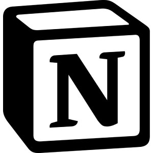

En nuestro día a día siempre estamos ocupados, parace que simpre hay algo que hacer y luchamos por tener un tiempo de descanzo, poder desconenctarnos de este mundo tan afanado y tomar un respiro.
Pero es como si nos fuese imposible, a veces sentimos que vamos a tener ese pequeño momento de descanso pero terminamos malgastando el tiempo, alargamos lo que tenemos que hacer y al final terminamos corriendo, pero al menos funciona, ¿no? Tenemos nuestro tiempo de descanso, solo que no cuando lo teniamos planeado, a costa de ese afán y estres de correr haciendo todo aquello que se tenía en mente con la esperanza de completarlo a tiempo.
La solución...
La respuesta para rendir en el día está frente a nosotros, no desperdiciar el tiempo, hay que aprovecharlo al máximo, ya sea para el ocio o para trabajar, ¿cómo? Siendo productivo.
La idea de ser productivo no se trata de siepre estar haciendo algo, es saber optimizar el tiempo, organizarnos para que en un corto lapso de tiempo logremos hacer eso que creemos que puede tardar horas.
¿Cómo ser productivo?
Para ser productivo se requiere de dos cosas importantes, organización y concentración; para concentrarnos solo debemos dejar el movil a un lado, dejarlo en silencio y empezar con solo 5 minutos esa tarea y pronto ya nos estaremos concentrando. Para la organización, requerimos de algo más, necesitamos de herramientas que os faciliten a organizarnos, como un cuaderno o una aplicación de notas.
Aquí es donde entra Notion
Notion
Cuando se trata de organización y productividad notion es una de las mejores opciones
Notion no solo ofrece la clásicas notas que podemos tomar, además cuanta con diferentes elementos como encabezados, desplegables, tables e inclusoelementos más complejos como enlaces a otras páginas (notas) de Notion, basses de datos y sincronización con otras aplicaciones.
Si hasta ahora vas a emezar con Notion, no te preocupes por todo lo que esta aplicación ofrece, Notion también te ayuda con diferentes plantillas, que abarcan desde un diario hasta todo un proyecto. Otro aspecto a reslatar es la IA que Notion tiene incorporada, que te puede ayudar a crear, inspirarte y mejorar el contenido de Notion.
Notion ofrece dos planes de uso, uno gratuito, muy completo, y uno de pago con grandes características:
- Plan gratuito
- Espacio de trabajo colaborativo
- Slack, Github y más integraciones
- Sin límite de bloques para equipos
- Sin límite de subida de archivos
- Historial de páginas de 30 días
- Hasta 100 invitados
- Plan plus
- Espacios de equipo privados
- Exportación masiva en PDF
- Historial de páginas de 90 días
- Hasta 250 invitados